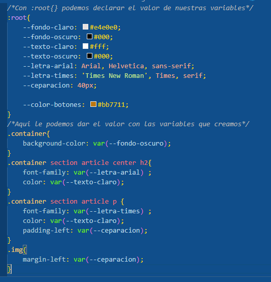

Variables css
El nuevo sistema de variables css funciona de la siguiente manera donde cremos diferentes variables:
variable para fondo negro
variable para texto claro
variable para tipo de letra arial para el titulo
variable para el tipo de letra para el texto times new roman.
y una variable para la ceparacion del texto y la imagen.
.
